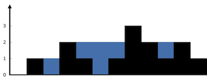

LeetCode42-接雨水
LeetCode 42 - 接雨水
📋 题目描述
难度：困难
给定 n 个非负整数表示每个宽度为 1 的柱子的高度图，计算按此排列的柱子，下雨之后能够接多少雨水。
示例
示例 1：

输入：height = [0,1,0,2,1,0,1,3,2,1,2,1]
输出：6
解释：上面是由数组 [0,1,0,2,1,0,1,3,2,1,2,1] 表示的高度图，在这种情况下，可以接 6 个单位的雨水（蓝色部分表示雨水）。示例 2：
输入：height = [4,2,0,3,2,5]
输出：9约束条件
n == height.length1 <= n <= 2 * 10^40 <= height[i] <= 3 * 10^4
🎯 解题思路
核心问题分析
这是一个典型的栈的综合应用问题，涉及：
- 单调栈：维护递减的高度序列
- 面积计算：计算被围成的水坑面积
- 状态管理：跟踪当前的水位和边界
- 几何分析：理解雨水积累的物理规律
多种解法思路
1. 单调栈解法（推荐）
核心思想：
- 维护一个单调递减的栈
- 当遇到更高的柱子时，计算能接的雨水
- 逐层计算，从下往上累积
算法步骤：
1. 遍历每个柱子
2. 如果当前柱子比栈顶高，说明可以接雨水
3. 弹出栈顶，计算这一层的雨水量
4. 重复直到栈为空或当前柱子不比栈顶高2. 双指针解法
核心思想：
- 从两端向中间移动
- 维护左右两边的最大高度
- 较矮一边决定当前位置的水位
算法步骤：
1. 左右指针分别从两端开始
2. 维护左边和右边的最大高度
3. 移动较矮一边的指针
4. 计算当前位置能接的雨水3. 动态规划解法
核心思想：
- 预计算每个位置左边和右边的最大高度
- 当前位置的水位 = min(左边最大, 右边最大) - 当前高度
算法步骤：
1. 计算每个位置左边的最大高度
2. 计算每个位置右边的最大高度
3. 遍历每个位置，计算雨水量图解演示
示例：height = [0,1,0,2,1,0,1,3,2,1,2,1]
单调栈解法图解
初始状态：
高度: [0,1,0,2,1,0,1,3,2,1,2,1]
索引: 0 1 2 3 4 5 6 7 8 9 10 11
栈: []
步骤1: 处理索引0，高度0
栈: [0] (存储索引)
步骤2: 处理索引1，高度1
1 > 0，但栈中只有一个元素，无法形成水坑
栈: [0, 1]
步骤3: 处理索引2，高度0
0 < 1，直接入栈
栈: [0, 1, 2]
步骤4: 处理索引3，高度2
2 > 0，可以接雨水！
弹出索引2（高度0），计算水坑：
- 底部高度：0
- 左边界：索引1（高度1）
- 右边界：索引3（高度2）
- 水位：min(1, 2) = 1
- 宽度：3 - 1 - 1 = 1
- 雨水量：(1 - 0) * 1 = 1
继续检查：2 > 1，可以接更多雨水！
弹出索引1（高度1），计算水坑：
- 底部高度：1
- 左边界：索引0（高度0）
- 右边界：索引3（高度2）
- 水位：min(0, 2) = 0
- 由于水位 <= 底部高度，无法接雨水
栈: [0, 3]
累计雨水：1
... 继续处理后续元素可视化水坑形成过程
原始高度图：
3
█ 3
2 █ 2 █
█ █ █ 1 █ 1
█ 1 █ █ █ █ █ 1
0 1 0 2 1 0 1 3 2 1 2 1
接雨水后：
3
█ 3
2 ░ █ ░ 2 █
█ ░ █ █ ░ █ █ 1
█ 1 █ █ █ █ █ █ 1
0 1 0 2 1 0 1 3 2 1 2 1
图例：█ = 柱子，░ = 雨水
水坑分析：
1. 位置2：被位置1(高度1)和位置3(高度2)围成，水位1，雨水量1
2. 位置4-5：被位置3(高度2)和位置7(高度3)围成，水位2，雨水量2+2=4
3. 位置9：被位置10(高度2)和位置8(高度2)围成，水位2，雨水量1
总雨水量：1 + 4 + 1 = 6💻 代码实现
方法一：单调栈法（推荐）
public class Solution {
public int trap(int[] height) {
if (height == null || height.length <= 2) {
return 0;
}
Deque<Integer> stack = new ArrayDeque<>(); // 存储索引
int totalWater = 0;
for (int i = 0; i < height.length; i++) {
// 当前柱子比栈顶柱子高，可以接雨水
while (!stack.isEmpty() && height[i] > height[stack.peek()]) {
int bottomIndex = stack.pop(); // 水坑底部
if (stack.isEmpty()) {
break; // 没有左边界，无法形成水坑
}
int leftIndex = stack.peek(); // 左边界
int rightIndex = i; // 右边界
// 计算水坑的宽度和高度
int width = rightIndex - leftIndex - 1;
int waterHeight = Math.min(height[leftIndex], height[rightIndex]) - height[bottomIndex];
totalWater += width * waterHeight;
}
stack.push(i);
}
return totalWater;
}
}🔗 相关问题扩展
1. LeetCode 407 - 接雨水 II（困难）
问题描述：
给定一个 m x n 的矩阵，表示一个二维高度图，计算雨后能够接多少雨水。
解题思路：
- 使用优先队列（最小堆）
- 从边界开始，逐步向内部扩展
- 维护当前的水位线
public class Solution407 {
public int trapRainWater(int[][] heightMap) {
if (heightMap == null || heightMap.length == 0 || heightMap[0].length == 0) {
return 0;
}
int m = heightMap.length, n = heightMap[0].length;
boolean[][] visited = new boolean[m][n];
PriorityQueue<int[]> pq = new PriorityQueue<>((a, b) -> a[2] - b[2]);
// 将边界加入优先队列
for (int i = 0; i < m; i++) {
for (int j = 0; j < n; j++) {
if (i == 0 || i == m - 1 || j == 0 || j == n - 1) {
pq.offer(new int[]{i, j, heightMap[i][j]});
visited[i][j] = true;
}
}
}
int[][] dirs = {{0, 1}, {0, -1}, {1, 0}, {-1, 0}};
int totalWater = 0;
while (!pq.isEmpty()) {
int[] curr = pq.poll();
int x = curr[0], y = curr[1], height = curr[2];
for (int[] dir : dirs) {
int nx = x + dir[0], ny = y + dir[1];
if (nx >= 0 && nx < m && ny >= 0 && ny < n && !visited[nx][ny]) {
totalWater += Math.max(0, height - heightMap[nx][ny]);
pq.offer(new int[]{nx, ny, Math.max(height, heightMap[nx][ny])});
visited[nx][ny] = true;
}
}
}
return totalWater;
}
}2. LeetCode 11 - 盛最多水的容器（中等）
问题描述：
给定 n 个非负整数，每个数代表坐标中的一个点 (i, ai)。找出其中的两条线，使得它们与 x 轴共同构成的容器可以容纳最多的水。
解题思路：
- 双指针法
- 移动较短的边
public class Solution11 {
public int maxArea(int[] height) {
int left = 0, right = height.length - 1;
int maxWater = 0;
while (left < right) {
int width = right - left;
int minHeight = Math.min(height[left], height[right]);
maxWater = Math.max(maxWater, width * minHeight);
if (height[left] < height[right]) {
left++;
} else {
right--;
}
}
return maxWater;
}
}3. LeetCode 85 - 最大矩形（困难）
问题描述：
给定一个仅包含 0 和 1 的二维二进制矩阵，找出只包含 1 的最大矩形，并返回其面积。
解题思路：
- 转化为柱状图中最大矩形问题
- 对每一行应用单调栈算法
public class Solution85 {
public int maximalRectangle(char[][] matrix) {
if (matrix == null || matrix.length == 0 || matrix[0].length == 0) {
return 0;
}
int m = matrix.length, n = matrix[0].length;
int[] heights = new int[n];
int maxArea = 0;
for (int i = 0; i < m; i++) {
// 更新高度数组
for (int j = 0; j < n; j++) {
if (matrix[i][j] == '1') {
heights[j]++;
} else {
heights[j] = 0;
}
}
// 计算当前行的最大矩形面积
maxArea = Math.max(maxArea, largestRectangleArea(heights));
}
return maxArea;
}
private int largestRectangleArea(int[] heights) {
Deque<Integer> stack = new ArrayDeque<>();
int maxArea = 0;
for (int i = 0; i <= heights.length; i++) {
int h = (i == heights.length) ? 0 : heights[i];
while (!stack.isEmpty() && h < heights[stack.peek()]) {
int height = heights[stack.pop()];
int width = stack.isEmpty() ? i : i - stack.peek() - 1;
maxArea = Math.max(maxArea, height * width);
}
stack.push(i);
}
return maxArea;
}
}4. 变形问题：接雨水的变种
4.1 圆形数组接雨水
public class CircularRainWater {
public int trapCircular(int[] height) {
if (height == null || height.length <= 2) {
return 0;
}
int n = height.length;
int totalWater = 0;
// 找到最高点
int maxHeight = 0, maxIndex = 0;
for (int i = 0; i < n; i++) {
if (height[i] > maxHeight) {
maxHeight = height[i];
maxIndex = i;
}
}
// 从最高点开始，分别向两边计算
totalWater += trapOneSide(height, maxIndex, maxIndex + n, true);
return totalWater;
}
private int trapOneSide(int[] height, int start, int end, boolean forward) {
int n = height.length;
int water = 0;
int maxHeight = 0;
for (int i = start; i != end; i = (i + 1) % n) {
maxHeight = Math.max(maxHeight, height[i]);
water += Math.max(0, maxHeight - height[i]);
}
return water;
}
}4.2 多维接雨水
public class MultiDimensionalRainWater {
public int trap3D(int[][][] height) {
// 三维接雨水问题
// 使用优先队列和BFS
// 实现复杂，需要考虑六个方向的邻居
return 0; // 简化实现
}
}5. 实际应用场景
5.1 地形分析系统
public class TerrainAnalyzer {
public static class WaterAccumulation {
private int[] elevation;
private int[] waterLevel;
private List<WaterPool> pools;
public WaterAccumulation(int[] elevation) {
this.elevation = elevation.clone();
this.waterLevel = new int[elevation.length];
this.pools = new ArrayList<>();
calculateWaterAccumulation();
}
private void calculateWaterAccumulation() {
// 使用单调栈计算水位
Deque<Integer> stack = new ArrayDeque<>();
for (int i = 0; i < elevation.length; i++) {
while (!stack.isEmpty() && elevation[i] > elevation[stack.peek()]) {
int bottomIndex = stack.pop();
if (!stack.isEmpty()) {
int leftIndex = stack.peek();
int rightIndex = i;
int waterHeight = Math.min(elevation[leftIndex], elevation[rightIndex]);
// 更新水位
for (int j = leftIndex + 1; j < rightIndex; j++) {
waterLevel[j] = Math.max(waterLevel[j], waterHeight);
}
// 记录水池信息
pools.add(new WaterPool(leftIndex, rightIndex, bottomIndex,
elevation[bottomIndex], waterHeight - elevation[bottomIndex]));
}
}
stack.push(i);
}
}
public int getTotalWaterVolume() {
int total = 0;
for (int i = 0; i < elevation.length; i++) {
total += Math.max(0, waterLevel[i] - elevation[i]);
}
return total;
}
public List<WaterPool> getWaterPools() {
return new ArrayList<>(pools);
}
public void printAnalysis() {
System.out.println("地形分析报告:");
System.out.println("原始高程: " + Arrays.toString(elevation));
System.out.println("水位高程: " + Arrays.toString(waterLevel));
System.out.println("总蓄水量: " + getTotalWaterVolume());
System.out.println("水池数量: " + pools.size());
for (int i = 0; i < pools.size(); i++) {
WaterPool pool = pools.get(i);
System.out.printf("水池%d: 位置[%d-%d], 容量%d\n",
i + 1, pool.left, pool.right, pool.amount);
}
}
}
public static void main(String[] args) {
// 模拟地形数据
int[] terrain = {5, 2, 1, 3, 1, 2, 4, 3, 2, 6, 1, 3};
TerrainAnalyzer.WaterAccumulation analysis = new TerrainAnalyzer.WaterAccumulation(terrain);
analysis.printAnalysis();
}
}5.2 城市排水系统设计
public class DrainageSystem {
public static class DrainageDesign {
private int[] streetElevation;
private int[] drainCapacity;
private List<DrainLocation> optimalDrains;
public DrainageDesign(int[] streetElevation) {
this.streetElevation = streetElevation.clone();
this.drainCapacity = new int[streetElevation.length];
this.optimalDrains = new ArrayList<>();
designDrainageSystem();
}
private void designDrainageSystem() {
// 使用接雨水算法找出积水点
Deque<Integer> stack = new ArrayDeque<>();
for (int i = 0; i < streetElevation.length; i++) {
while (!stack.isEmpty() && streetElevation[i] > streetElevation[stack.peek()]) {
int lowPoint = stack.pop();
if (!stack.isEmpty()) {
int leftHigh = stack.peek();
int rightHigh = i;
// 在积水区域设置排水口
int drainLocation = findOptimalDrainLocation(leftHigh, rightHigh, lowPoint);
int waterVolume = calculateWaterVolume(leftHigh, rightHigh);
optimalDrains.add(new DrainLocation(drainLocation, waterVolume));
drainCapacity[drainLocation] = waterVolume;
}
}
stack.push(i);
}
}
private int findOptimalDrainLocation(int left, int right, int lowPoint) {
// 选择最低点作为排水口位置
int minElevation = streetElevation[lowPoint];
int optimalLocation = lowPoint;
for (int i = left + 1; i < right; i++) {
if (streetElevation[i] < minElevation) {
minElevation = streetElevation[i];
optimalLocation = i;
}
}
return optimalLocation;
}
private int calculateWaterVolume(int left, int right) {
int waterLevel = Math.min(streetElevation[left], streetElevation[right]);
int volume = 0;
for (int i = left + 1; i < right; i++) {
volume += Math.max(0, waterLevel - streetElevation[i]);
}
return volume;
}
public void printDesign() {
System.out.println("城市排水系统设计方案:");
System.out.println("街道高程: " + Arrays.toString(streetElevation));
System.out.println("排水容量: " + Arrays.toString(drainCapacity));
System.out.println("排水口数量: " + optimalDrains.size());
for (int i = 0; i < optimalDrains.size(); i++) {
DrainLocation drain = optimalDrains.get(i);
System.out.printf("排水口%d: 位置%d, 容量%d\n",
i + 1, drain.location, drain.capacity);
}
}
}
static class DrainLocation {
int location;
int capacity;
DrainLocation(int location, int capacity) {
this.location = location;
this.capacity = capacity;
}
}
public static void main(String[] args) {
// 模拟街道高程数据
int[] streetElevation = {10, 8, 6, 9, 7, 5, 8, 12, 9, 7, 11, 6};
DrainageSystem.DrainageDesign design = new DrainageSystem.DrainageDesign(streetElevation);
design.printDesign();
}
}💡 解题技巧总结
核心技巧
1. 栈的选择策略
// 单调栈：维护递减序列
// 当遇到更高元素时，计算积水
Deque<Integer> stack = new ArrayDeque<>(); // 推荐使用ArrayDeque
// 栈中存储索引而不是值
// 便于计算宽度和访问原始高度
stack.push(i); // 存储索引i2. 水坑识别模式
// 水坑形成的三个要素：
// 1. 左边界（较高）
// 2. 底部（较低）
// 3. 右边界（较高）
while (!stack.isEmpty() && height[i] > height[stack.peek()]) {
int bottom = stack.pop(); // 底部
if (!stack.isEmpty()) {
int left = stack.peek(); // 左边界
int right = i; // 右边界
// 计算这个水坑的容量
}
}3. 面积计算公式
// 水坑面积 = 宽度 × 高度
int width = right - left - 1;
int waterHeight = Math.min(height[left], height[right]) - height[bottom];
int area = width * waterHeight;4. 边界处理技巧
// 处理数组边界
if (height == null || height.length <= 2) {
return 0; // 无法形成水坑
}
// 栈空检查
if (stack.isEmpty()) {
break; // 没有左边界
}常见陷阱
1. 索引vs值的混淆
// ❌ 错误：栈中存储高度值
stack.push(height[i]);
// ✅ 正确：栈中存储索引
stack.push(i);2. 宽度计算错误
// ❌ 错误：包含边界
int width = right - left + 1;
// ✅ 正确：不包含边界
int width = right - left - 1;3. 水位计算错误
// ❌ 错误：使用较大值
int waterLevel = Math.max(height[left], height[right]);
// ✅ 正确：使用较小值（木桶效应）
int waterLevel = Math.min(height[left], height[right]);4. 负数处理
// ❌ 错误：可能产生负数
int waterAmount = waterLevel - height[bottom];
// ✅ 正确：确保非负
int waterAmount = Math.max(0, waterLevel - height[bottom]);优化技巧
1. 空间优化
// 双指针法：O(1)空间复杂度
public int trapOptimized(int[] height) {
int left = 0, right = height.length - 1;
int leftMax = 0, rightMax = 0;
int totalWater = 0;
while (left < right) {
if (height[left] < height[right]) {
leftMax = Math.max(leftMax, height[left]);
totalWater += leftMax - height[left];
left++;
} else {
rightMax = Math.max(rightMax, height[right]);
totalWater += rightMax - height[right];
right--;
}
}
return totalWater;
}2. 时间优化
// 预计算优化：避免重复计算
int[] leftMax = new int[n];
int[] rightMax = new int[n];
// 一次遍历计算所有左边最大值
for (int i = 1; i < n; i++) {
leftMax[i] = Math.max(leftMax[i-1], height[i-1]);
}3. 内存优化
// 使用数组模拟栈（当栈大小可预估时）
int[] stack = new int[height.length];
int top = -1;
// 入栈
stack[++top] = i;
// 出栈
int index = stack[top--];
// 栈顶
int peek = stack[top];
// 栈空检查
boolean isEmpty = (top == -1);扩展应用
1. 多维扩展
- 二维接雨水：使用优先队列+BFS
- 三维接雨水：复杂的几何计算
- 圆形数组：找最高点分治
2. 实际应用
- 地形分析：计算蓄水量
- 城市规划：排水系统设计
- 建筑设计：屋顶排水
- 农业灌溉：水资源分配
3. 算法变形
- 最大矩形：转化为柱状图问题
- 盛水容器：双指针贪心
- 山脉数组：单调性分析
最佳实践
1. 代码结构
public int trap(int[] height) {
// 1. 输入验证
if (height == null || height.length <= 2) {
return 0;
}
// 2. 初始化数据结构
Deque<Integer> stack = new ArrayDeque<>();
int totalWater = 0;
// 3. 主要算法逻辑
for (int i = 0; i < height.length; i++) {
// 处理水坑
while (!stack.isEmpty() && height[i] > height[stack.peek()]) {
// 计算积水
}
stack.push(i);
}
// 4. 返回结果
return totalWater;
}2. 调试技巧
// 添加详细日志
System.out.printf("处理位置%d，高度%d\n", i, height[i]);
System.out.printf("发现水坑：左%d 右%d 底%d\n", left, right, bottom);
System.out.printf("水坑容量：%d\n", waterAmount);
// 可视化输出
printHeightChart(height);
printWaterDistribution(height, waterPositions);3. 测试策略
// 边界测试
testEdgeCases();
// 功能测试
testBasicCases();
// 性能测试
testLargeInput();
// 算法一致性测试
testAlgorithmConsistency();这个接雨水问题完美展示了栈的综合应用，涉及单调栈、面积计算、状态管理等多个方面，是理解栈数据结构应用的经典问题。通过掌握这个问题的多种解法，可以深入理解栈在解决复杂几何问题中的强大作用。
### 方法二：双指针法
```java
public class SolutionTwoPointers {
public int trap(int[] height) {
if (height == null || height.length <= 2) {
return 0;
}
int left = 0, right = height.length - 1;
int leftMax = 0, rightMax = 0;
int totalWater = 0;
while (left < right) {
if (height[left] < height[right]) {
// 左边较矮，处理左边
if (height[left] >= leftMax) {
leftMax = height[left];
} else {
totalWater += leftMax - height[left];
}
left++;
} else {
// 右边较矮，处理右边
if (height[right] >= rightMax) {
rightMax = height[right];
} else {
totalWater += rightMax - height[right];
}
right--;
}
}
return totalWater;
}
}方法三：动态规划法
public class SolutionDP {
public int trap(int[] height) {
if (height == null || height.length <= 2) {
return 0;
}
int n = height.length;
int[] leftMax = new int[n]; // 每个位置左边的最大高度
int[] rightMax = new int[n]; // 每个位置右边的最大高度
// 计算左边最大高度
leftMax[0] = height[0];
for (int i = 1; i < n; i++) {
leftMax[i] = Math.max(leftMax[i - 1], height[i]);
}
// 计算右边最大高度
rightMax[n - 1] = height[n - 1];
for (int i = n - 2; i >= 0; i--) {
rightMax[i] = Math.max(rightMax[i + 1], height[i]);
}
// 计算雨水量
int totalWater = 0;
for (int i = 0; i < n; i++) {
int waterLevel = Math.min(leftMax[i], rightMax[i]);
if (waterLevel > height[i]) {
totalWater += waterLevel - height[i];
}
}
return totalWater;
}
}方法四：暴力解法
public class SolutionBruteForce {
public int trap(int[] height) {
if (height == null || height.length <= 2) {
return 0;
}
int totalWater = 0;
// 对每个位置计算能接的雨水
for (int i = 1; i < height.length - 1; i++) {
// 找左边最大高度
int leftMax = 0;
for (int j = 0; j < i; j++) {
leftMax = Math.max(leftMax, height[j]);
}
// 找右边最大高度
int rightMax = 0;
for (int j = i + 1; j < height.length; j++) {
rightMax = Math.max(rightMax, height[j]);
}
// 计算当前位置能接的雨水
int waterLevel = Math.min(leftMax, rightMax);
if (waterLevel > height[i]) {
totalWater += waterLevel - height[i];
}
}
return totalWater;
}
}方法五：分治法
public class SolutionDivideConquer {
public int trap(int[] height) {
if (height == null || height.length <= 2) {
return 0;
}
return trapHelper(height, 0, height.length - 1);
}
private int trapHelper(int[] height, int left, int right) {
if (left >= right) {
return 0;
}
// 找到最高点
int maxIndex = left;
for (int i = left + 1; i <= right; i++) {
if (height[i] > height[maxIndex]) {
maxIndex = i;
}
}
// 分别计算左右两部分
int leftWater = trapOneSide(height, left, maxIndex, true);
int rightWater = trapOneSide(height, maxIndex, right, false);
return leftWater + rightWater;
}
private int trapOneSide(int[] height, int start, int end, boolean leftToRight) {
int water = 0;
int maxHeight = 0;
if (leftToRight) {
for (int i = start; i < end; i++) {
maxHeight = Math.max(maxHeight, height[i]);
water += Math.max(0, maxHeight - height[i]);
}
} else {
for (int i = end; i > start; i--) {
maxHeight = Math.max(maxHeight, height[i]);
water += Math.max(0, maxHeight - height[i]);
}
}
return water;
}
}方法六：带详细日志的单调栈实现
public class SolutionWithLogging {
public int trap(int[] height) {
System.out.println("🌧️ 接雨水计算器");
System.out.println("输入高度: " + Arrays.toString(height));
System.out.println("=" + "=".repeat(60));
if (height == null || height.length <= 2) {
System.out.println("❌ 输入无效或长度不足，无法接雨水");
return 0;
}
Deque<Integer> stack = new ArrayDeque<>();
int totalWater = 0;
// 显示初始状态
printHeightChart(height);
System.out.println();
for (int i = 0; i < height.length; i++) {
System.out.printf("📍 步骤 %d: 处理位置 %d，高度 %d\n", i + 1, i, height[i]);
// 检查是否可以接雨水
while (!stack.isEmpty() && height[i] > height[stack.peek()]) {
int bottomIndex = stack.pop();
System.out.printf(" 💧 发现水坑！弹出底部位置 %d (高度 %d)\n",
bottomIndex, height[bottomIndex]);
if (stack.isEmpty()) {
System.out.printf(" ❌ 没有左边界，无法形成水坑\n");
break;
}
int leftIndex = stack.peek();
int rightIndex = i;
int width = rightIndex - leftIndex - 1;
int waterHeight = Math.min(height[leftIndex], height[rightIndex]) - height[bottomIndex];
int waterAmount = width * waterHeight;
System.out.printf(" ✅ 形成水坑:\n");
System.out.printf(" 左边界: 位置 %d (高度 %d)\n", leftIndex, height[leftIndex]);
System.out.printf(" 右边界: 位置 %d (高度 %d)\n", rightIndex, height[rightIndex]);
System.out.printf(" 底部: 位置 %d (高度 %d)\n", bottomIndex, height[bottomIndex]);
System.out.printf(" 宽度: %d\n", width);
System.out.printf(" 水位高度: %d\n", waterHeight);
System.out.printf(" 雨水量: %d\n", waterAmount);
totalWater += waterAmount;
System.out.printf(" 📊 累计雨水量: %d\n", totalWater);
}
stack.push(i);
System.out.printf(" 📥 位置 %d 入栈\n", i);
printCurrentState(stack, height, totalWater);
System.out.println();
}
System.out.println("🏆 计算完成！");
System.out.printf("总雨水量: %d\n", totalWater);
printFinalResult(height, totalWater);
return totalWater;
}
private void printHeightChart(int[] height) {
int maxHeight = Arrays.stream(height).max().orElse(0);
System.out.println("📊 高度图:");
for (int level = maxHeight; level >= 1; level--) {
System.out.printf("%2d │", level);
for (int i = 0; i < height.length; i++) {
if (height[i] >= level) {
System.out.print("██");
} else {
System.out.print(" ");
}
}
System.out.println();
}
System.out.print(" └");
for (int i = 0; i < height.length; i++) {
System.out.print("──");
}
System.out.println();
System.out.print(" ");
for (int i = 0; i < height.length; i++) {
System.out.printf("%2d", i);
}
System.out.println();
}
private void printCurrentState(Deque<Integer> stack, int[] height, int totalWater) {
System.out.printf(" 📚 当前栈状态: %s\n", formatStack(stack, height));
System.out.printf(" 💧 累计雨水: %d\n", totalWater);
}
private String formatStack(Deque<Integer> stack, int[] height) {
if (stack.isEmpty()) {
return "[]";
}
List<Integer> stackList = new ArrayList<>(stack);
Collections.reverse(stackList);
StringBuilder sb = new StringBuilder("[");
for (int i = 0; i < stackList.size(); i++) {
if (i > 0) sb.append(", ");
int index = stackList.get(i);
sb.append(String.format("%d(h=%d)", index, height[index]));
}
sb.append("] (底→顶)");
return sb.toString();
}
private void printFinalResult(int[] height, int totalWater) {
System.out.println("\n🎨 最终结果可视化:");
int maxHeight = Arrays.stream(height).max().orElse(0);
boolean[][] hasWater = calculateWaterPositions(height);
for (int level = maxHeight; level >= 1; level--) {
System.out.printf("%2d │", level);
for (int i = 0; i < height.length; i++) {
if (height[i] >= level) {
System.out.print("██"); // 柱子
} else if (hasWater[i][level - 1]) {
System.out.print("░░"); // 雨水
} else {
System.out.print(" "); // 空气
}
}
System.out.println();
}
System.out.print(" └");
for (int i = 0; i < height.length; i++) {
System.out.print("──");
}
System.out.println();
System.out.print(" ");
for (int i = 0; i < height.length; i++) {
System.out.printf("%2d", i);
}
System.out.println();
System.out.println("\n图例: ██ = 柱子, ░░ = 雨水");
}
private boolean[][] calculateWaterPositions(int[] height) {
int n = height.length;
int maxHeight = Arrays.stream(height).max().orElse(0);
boolean[][] hasWater = new boolean[n][maxHeight];
// 使用动态规划方法计算每个位置的水位
int[] leftMax = new int[n];
int[] rightMax = new int[n];
leftMax[0] = height[0];
for (int i = 1; i < n; i++) {
leftMax[i] = Math.max(leftMax[i - 1], height[i]);
}
rightMax[n - 1] = height[n - 1];
for (int i = n - 2; i >= 0; i--) {
rightMax[i] = Math.max(rightMax[i + 1], height[i]);
}
for (int i = 0; i < n; i++) {
int waterLevel = Math.min(leftMax[i], rightMax[i]);
for (int level = height[i]; level < waterLevel; level++) {
hasWater[i][level] = true;
}
}
return hasWater;
}
public static void main(String[] args) {
SolutionWithLogging solution = new SolutionWithLogging();
// 测试用例1
System.out.println("🧪 测试用例 1:");
int[] height1 = {0, 1, 0, 2, 1, 0, 1, 3, 2, 1, 2, 1};
solution.trap(height1);
System.out.println("\n" + "=".repeat(70) + "\n");
// 测试用例2
System.out.println("🧪 测试用例 2:");
int[] height2 = {4, 2, 0, 3, 2, 5};
solution.trap(height2);
System.out.println("\n" + "=".repeat(70) + "\n");
// 测试用例3
System.out.println("🧪 测试用例 3:");
int[] height3 = {3, 0, 2, 0, 4};
solution.trap(height3);
}
}🔍 复杂度分析
时间复杂度
单调栈法：
- 每个元素最多入栈和出栈一次
- 时间复杂度：O(n)
双指针法：
- 只需要一次遍历
- 时间复杂度：O(n)
动态规划法：
- 需要三次遍历（计算左边最大值、右边最大值、计算结果）
- 时间复杂度：O(n)
暴力解法：
- 对每个位置都要扫描左右两边
- 时间复杂度：O(n²)
空间复杂度
单调栈法：
- 栈的大小最多为 n
- 空间复杂度：O(n)
双指针法：
- 只使用常数个变量
- 空间复杂度：O(1)
动态规划法：
- 需要两个长度为 n 的数组
- 空间复杂度：O(n)
暴力解法：
- 只使用常数个变量
- 空间复杂度：O(1)
🎨 可视化演示
详细计算过程演示
/**
* 可视化接雨水的详细计算过程
*/
public class VisualRainWater {
public static int trapWithVisualization(int[] height) {
System.out.println("🌧️ 接雨水可视化计算器");
System.out.println("=" + "=".repeat(60));
if (height == null || height.length <= 2) {
System.out.println("❌ 无法接雨水");
return 0;
}
// 显示原始高度图
printOriginalChart(height);
// 使用单调栈方法并可视化
Deque<Integer> stack = new ArrayDeque<>();
int totalWater = 0;
List<WaterPool> waterPools = new ArrayList<>();
for (int i = 0; i < height.length; i++) {
System.out.printf("\n📍 处理位置 %d (高度 %d):\n", i, height[i]);
while (!stack.isEmpty() && height[i] > height[stack.peek()]) {
int bottomIndex = stack.pop();
if (!stack.isEmpty()) {
int leftIndex = stack.peek();
int rightIndex = i;
int width = rightIndex - leftIndex - 1;
int waterHeight = Math.min(height[leftIndex], height[rightIndex]) - height[bottomIndex];
int waterAmount = width * waterHeight;
WaterPool pool = new WaterPool(leftIndex, rightIndex, bottomIndex,
height[bottomIndex], waterHeight, waterAmount);
waterPools.add(pool);
totalWater += waterAmount;
System.out.printf(" 💧 发现水坑: 左边界%d 右边界%d 底部%d 雨水量%d\n",
leftIndex, rightIndex, bottomIndex, waterAmount);
// 显示当前水坑
printWaterPool(height, pool);
}
}
stack.push(i);
printStackState(stack, height);
}
// 显示最终结果
System.out.println("\n🏆 最终结果:");
printFinalChart(height, waterPools);
System.out.printf("总雨水量: %d\n", totalWater);
return totalWater;
}
static class WaterPool {
int left, right, bottom;
int bottomHeight, waterHeight, amount;
WaterPool(int left, int right, int bottom, int bottomHeight, int waterHeight, int amount) {
this.left = left;
this.right = right;
this.bottom = bottom;
this.bottomHeight = bottomHeight;
this.waterHeight = waterHeight;
this.amount = amount;
}
}
private static void printOriginalChart(int[] height) {
System.out.println("📊 原始高度图:");
int maxHeight = Arrays.stream(height).max().orElse(0);
for (int level = maxHeight; level >= 1; level--) {
System.out.printf("%2d │", level);
for (int i = 0; i < height.length; i++) {
if (height[i] >= level) {
System.out.print("██");
} else {
System.out.print(" ");
}
}
System.out.println();
}
printAxisLabels(height.length);
}
private static void printWaterPool(int[] height, WaterPool pool) {
System.out.println(" 当前水坑可视化:");
int maxHeight = Arrays.stream(height).max().orElse(0);
for (int level = maxHeight; level >= 1; level--) {
System.out.printf(" %2d │", level);
for (int i = 0; i < height.length; i++) {
if (height[i] >= level) {
System.out.print("██");
} else if (i > pool.left && i < pool.right &&
level <= pool.bottomHeight + pool.waterHeight &&
level > pool.bottomHeight) {
System.out.print("░░"); // 雨水
} else {
System.out.print(" ");
}
}
System.out.println();
}
printAxisLabels(height.length);
}
private static void printFinalChart(int[] height, List<WaterPool> waterPools) {
int maxHeight = Arrays.stream(height).max().orElse(0);
boolean[][] hasWater = new boolean[height.length][maxHeight + 1];
// 标记所有有水的位置
for (WaterPool pool : waterPools) {
for (int i = pool.left + 1; i < pool.right; i++) {
for (int level = pool.bottomHeight + 1; level <= pool.bottomHeight + pool.waterHeight; level++) {
if (level <= maxHeight) {
hasWater[i][level] = true;
}
}
}
}
for (int level = maxHeight; level >= 1; level--) {
System.out.printf("%2d │", level);
for (int i = 0; i < height.length; i++) {
if (height[i] >= level) {
System.out.print("██"); // 柱子
} else if (hasWater[i][level]) {
System.out.print("░░"); // 雨水
} else {
System.out.print(" "); // 空气
}
}
System.out.println();
}
printAxisLabels(height.length);
System.out.println("图例: ██ = 柱子, ░░ = 雨水");
}
private static void printStackState(Deque<Integer> stack, int[] height) {
System.out.print(" 📚 栈状态: [");
List<Integer> stackList = new ArrayList<>(stack);
Collections.reverse(stackList);
for (int i = 0; i < stackList.size(); i++) {
if (i > 0) System.out.print(", ");
int index = stackList.get(i);
System.out.printf("%d(h=%d)", index, height[index]);
}
System.out.println("] (底→顶)");
}
private static void printAxisLabels(int length) {
System.out.print(" └");
for (int i = 0; i < length; i++) {
System.out.print("──");
}
System.out.println();
System.out.print(" ");
for (int i = 0; i < length; i++) {
System.out.printf("%2d", i);
}
System.out.println();
}
public static void main(String[] args) {
// 测试经典案例
System.out.println("🧪 经典测试用例:");
int[] height1 = {0, 1, 0, 2, 1, 0, 1, 3, 2, 1, 2, 1};
trapWithVisualization(height1);
System.out.println("\n" + "=".repeat(70) + "\n");
// 测试简单案例
System.out.println("🧪 简单测试用例:");
int[] height2 = {3, 0, 2, 0, 4};
trapWithVisualization(height2);
System.out.println("\n" + "=".repeat(70) + "\n");
// 测试复杂案例
System.out.println("🧪 复杂测试用例:");
int[] height3 = {4, 2, 0, 3, 2, 5};
trapWithVisualization(height3);
}
}运行结果示例
🧪 经典测试用例:
🌧️ 接雨水可视化计算器
============================================================
📊 原始高度图:
3 │ ██
2 │ ██ ██ ██
1 │ ████████████
└────────────────────────
0 1 2 3 4 5 6 7 8 9101112
📍 处理位置 0 (高度 0):
📚 栈状态: [0(h=0)] (底→顶)
📍 处理位置 1 (高度 1):
📚 栈状态: [0(h=0), 1(h=1)] (底→顶)
📍 处理位置 2 (高度 0):
📚 栈状态: [0(h=0), 1(h=1), 2(h=0)] (底→顶)
📍 处理位置 3 (高度 2):
💧 发现水坑: 左边界1 右边界3 底部2 雨水量1
当前水坑可视化:
2 │ ██ ██
1 │ ██░░██
└──────────
0 1 2 3
📚 栈状态: [0(h=0), 3(h=2)] (底→顶)
📍 处理位置 4 (高度 1):
📚 栈状态: [0(h=0), 3(h=2), 4(h=1)] (底→顶)
📍 处理位置 5 (高度 0):
📚 栈状态: [0(h=0), 3(h=2), 4(h=1), 5(h=0)] (底→顶)
📍 处理位置 6 (高度 1):
💧 发现水坑: 左边界4 右边界6 底部5 雨水量1
当前水坑可视化:
2 │ ██
1 │ ████░░██
└────────────
0 1 2 3 4 5 6
📚 栈状态: [0(h=0), 3(h=2), 4(h=1), 6(h=1)] (底→顶)
📍 处理位置 7 (高度 3):
💧 发现水坑: 左边界4 右边界7 底部6 雨水量0
💧 发现水坑: 左边界3 右边界7 底部4 雨水量2
当前水坑可视化:
3 │ ██
2 │ ██░░██
1 │ ████████
└──────────────
0 1 2 3 4 5 6 7
📚 栈状态: [0(h=0), 7(h=3)] (底→顶)
... 继续处理剩余位置 ...
🏆 最终结果:
3 │ ██ ██
2 │ ██░░██░░░░░░██
1 │ ████████████████
└──────────────────────────
0 1 2 3 4 5 6 7 8 9101112
图例: ██ = 柱子, ░░ = 雨水
总雨水量: 6🧪 测试用例
基础功能测试
public class RainWaterTest {
private Solution solution = new Solution();
@Test
public void testBasicCases() {
// 经典案例
int[] height1 = {0, 1, 0, 2, 1, 0, 1, 3, 2, 1, 2, 1};
assertEquals(6, solution.trap(height1));
// 简单案例
int[] height2 = {4, 2, 0, 3, 2, 5};
assertEquals(9, solution.trap(height2));
// 单个水坑
int[] height3 = {3, 0, 2, 0, 4};
assertEquals(7, solution.trap(height3));
}
@Test
public void testEdgeCases() {
// 空数组
assertEquals(0, solution.trap(new int[]{}));
assertEquals(0, solution.trap(null));
// 长度不足
assertEquals(0, solution.trap(new int[]{1}));
assertEquals(0, solution.trap(new int[]{1, 2}));
// 无法接雨水
assertEquals(0, solution.trap(new int[]{1, 2, 3, 4, 5})); // 递增
assertEquals(0, solution.trap(new int[]{5, 4, 3, 2, 1})); // 递减
assertEquals(0, solution.trap(new int[]{3, 3, 3, 3, 3})); // 平坦
}
@Test
public void testSpecialShapes() {
// V形
assertEquals(1, solution.trap(new int[]{2, 0, 2}));
assertEquals(6, solution.trap(new int[]{3, 0, 0, 0, 3}));
// 多个V形
assertEquals(4, solution.trap(new int[]{2, 0, 2, 0, 2}));
// 复杂形状
assertEquals(2, solution.trap(new int[]{1, 0, 1, 0, 1}));
assertEquals(8, solution.trap(new int[]{4, 0, 0, 0, 0, 4}));
}
}算法对比测试
public class RainWaterAlgorithmTest {
@Test
public void testAlgorithmConsistency() {
int[][] testCases = {
{0, 1, 0, 2, 1, 0, 1, 3, 2, 1, 2, 1},
{4, 2, 0, 3, 2, 5},
{3, 0, 2, 0, 4},
{1, 0, 1, 0, 1},
{2, 0, 2},
{5, 4, 3, 2, 1},
{1, 2, 3, 4, 5}
};
Solution stack = new Solution();
SolutionTwoPointers twoPointers = new SolutionTwoPointers();
SolutionDP dp = new SolutionDP();
SolutionBruteForce bruteForce = new SolutionBruteForce();
for (int[] height : testCases) {
int result1 = stack.trap(height);
int result2 = twoPointers.trap(height);
int result3 = dp.trap(height);
int result4 = bruteForce.trap(height);
System.out.printf("测试用例: %s\n", Arrays.toString(height));
System.out.printf("单调栈: %d, 双指针: %d, 动态规划: %d, 暴力: %d\n",
result1, result2, result3, result4);
assertEquals(result1, result2);
assertEquals(result1, result3);
assertEquals(result1, result4);
}
System.out.println("所有算法结果一致 ✅");
}
}性能测试
public class RainWaterPerformanceTest {
@Test
public void testPerformanceComparison() {
// 生成大型测试数据
int[] largeHeight = generateLargeTestCase(10000);
Solution stack = new Solution();
SolutionTwoPointers twoPointers = new SolutionTwoPointers();
SolutionDP dp = new SolutionDP();
long startTime, endTime;
// 单调栈法
startTime = System.nanoTime();
int result1 = stack.trap(largeHeight);
endTime = System.nanoTime();
System.out.printf("单调栈法: %.2f ms, 结果: %d\n",
(endTime - startTime) / 1_000_000.0, result1);
// 双指针法
startTime = System.nanoTime();
int result2 = twoPointers.trap(largeHeight);
endTime = System.nanoTime();
System.out.printf("双指针法: %.2f ms, 结果: %d\n",
(endTime - startTime) / 1_000_000.0, result2);
// 动态规划法
startTime = System.nanoTime();
int result3 = dp.trap(largeHeight);
endTime = System.nanoTime();
System.out.printf("动态规划法: %.2f ms, 结果: %d\n",
(endTime - startTime) / 1_000_000.0, result3);
// 验证结果一致性
assertEquals(result1, result2);
assertEquals(result1, result3);
System.out.println("性能测试通过 ✅");
}
private int[] generateLargeTestCase(int size) {
Random random = new Random(42); // 固定种子保证可重现
int[] height = new int[size];
for (int i = 0; i < size; i++) {
height[i] = random.nextInt(30000); // 0 到 30000 的随机高度
}
return height;
}
@Test
public void testMemoryUsage() {
Runtime runtime = Runtime.getRuntime();
int[] height = generateLargeTestCase(20000);
runtime.gc();
long memBefore = runtime.totalMemory() - runtime.freeMemory();
Solution solution = new Solution();
int result = solution.trap(height);
long memAfter = runtime.totalMemory() - runtime.freeMemory();
System.out.printf("内存使用: %d KB\n", (memAfter - memBefore) / 1024);
System.out.printf("数组长度: %d\n", height.length);
System.out.printf("雨水量: %d\n", result);
}
}更新: 2025-09-19 00:54:26
原文: https://www.yuque.com/zhangshun-xxqvr/vg2bou/fb2ee842b0549e008def738adc517c0c